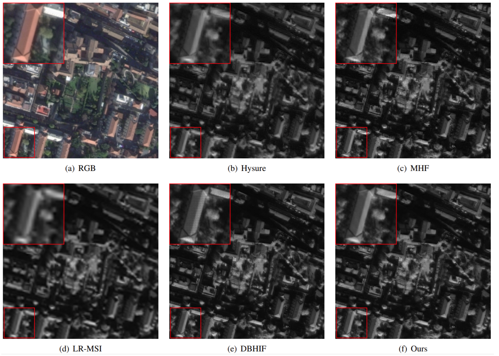

Abstract
The trade-off between spatial and spectral resolution is one of the fundamental issues in hyperspectral images (HSI). Given challenges with directly acquiring high-resolution hyperspectral images (HR-HSI), a compromised solution is to fuse a pair of images: one has high-resolution (HR) in the spatial domain but low-resolution (LR) in spectral-domain and the other vice versa. Model-based image fusion methods including pansharpening aim at reconstructing HR-HSI by solving manually designed objective functions. However, such hand-crafted prior often leads to inevitable performance degradation due to a lack of end-to-end optimization. Although several deep learningbased methods have been proposed for hyperspectral pansharpening, HR-HSI related domain knowledge has not been fully exploited, leaving room for further improvement. In this paper, we propose an iterative Hyperspectral image super-resolution (HSISR) algorithm based on a deep HSI denoiser to leverage both domain knowledge likelihood and deep image prior. By taking the observation matrix of HSI into account during the end-toend optimization, we show how to unfold an iterative HSISR algorithm into a novel model-guided deep convolutional network (MoG-DCN). The representation of the observation matrix by sub-networks also allows the unfolded deep HSISR network to work with different HSI situations, which enhances the flexibility of MoG-DCN. Extensive experimental results are reported to demonstrate that the proposed MoG-DCN outperforms several leading HSISR methods in terms of both implementation cost and visual qualities.
Paper & Code & Demo
Experimental Results
CAVE dataset:
Table 1. The average PSNR, SAM, ERGAS, and SSIM results of the test methods on the CAVE dataset for Gaussian blur kernel and scaling factors 8 and 16
Harvard dataset:
Table 2. The average PSNR, SAM, ERGAS, and SSIM results of the test methods on the Harvard dataset for Gaussian blur kernel and scaling factors 8 and 16
Result Visualization
-

Figure 2. Reconstructed images of World View-2.
Citation
@inproceedings{huang2021deep,
author = { Weisheng Dong, Chen Zhou, Fangfang Wu, Jinjian Wu, Guangming Shi, Xin Li },
title = { Model-Guided Deep Hyperspectral Image Super-resolution },
booktitle = { IEEE Transactions on Image Processing },
year = {2021}
}
Concat
Chen Zhou, Email: zhouchen_7@163.com
Weisheng Dong, Email: wsdong@mail.xidian.edu.cn
Fangfang Wu, Email: 271076679@qq.com
Jinjian Wu, Email: jinjian.wu@mail.xidian.edu.cn
Guangming Shi, Email:gmshi@xidian.edu.cn
Xin Li, Email: xin.li@ieee.org